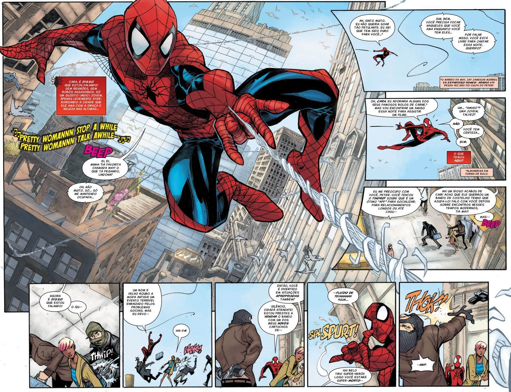
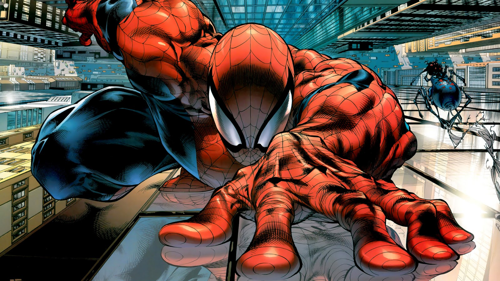
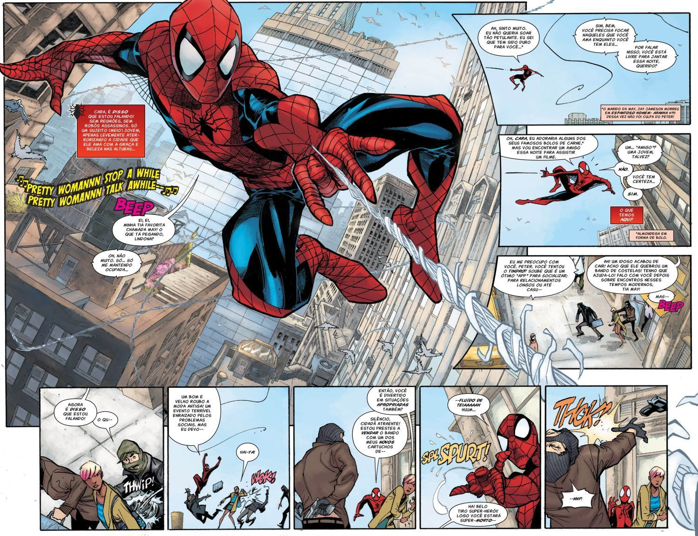
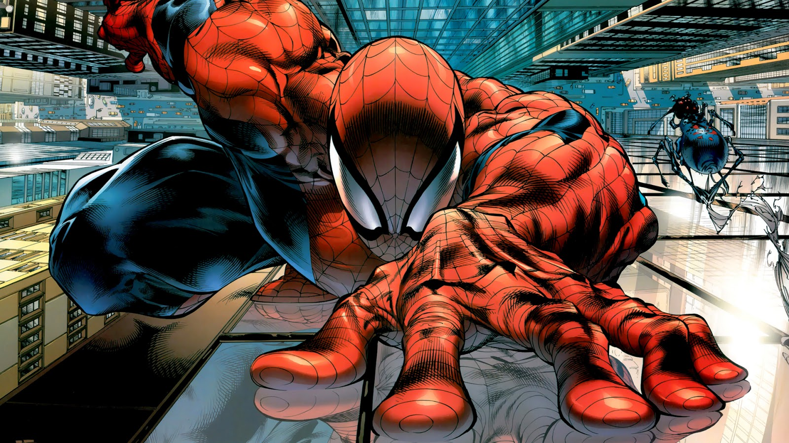

58 anos atrás nasceu o Homem-Aranha. Na última edição da revista Amanzing Fantasy aparecia pela primeira vez o super herói criado pelo tão amado Stan Lee (criador do conceito e roteirista), Jack Kirby (desenvolvedor inicial) e Steve Ditko (principal desenhista). O Homem-Aranha foi inspirado no personagem The Spider. Peter Parker é um adolescente comum que dá vida ao super herói. Ele foi criado pelos tios May e Ben. Ele é um excelente aluno mas não é popular na escola ate que é picado por uma aranha radioativa e adquire os poderes e habilidades de um aranha. Ao receber esses poderes, ele quer usá-los para enriquecer e ser popular, até que um trágico acontecimento muda seu plano: o assassinato de seu tio Ben. Ele decide viver combatendo vilões usando a frase do seu tio como lema "Com grandes poderes vêm grandes responsabilidades". Em quase 6 décadas do super herói aracnídeo, o Homem-Aranha já ganhou filmes, séries, jogos, musicais, desenhos animados. Atualmente é um dos héróis mais animados na história do cinema e das HQs, sendo uma das maiores franquias da Marvel e Sony Pictures.
| Origem | Principais Poderes e Habilidades | Principais Vilões |
|---|---|---|
| Aranha Radioativa | Disparadores de Teia | Dennis Carradine |
| Sentido Aranha | Duende Verde | |
| Força sobre-humana | Doutor Octopus | |
| Velocidade e agilidade | Venom | |
| Durabilidade | Camaleão | |
| Inteligência | Shocker |